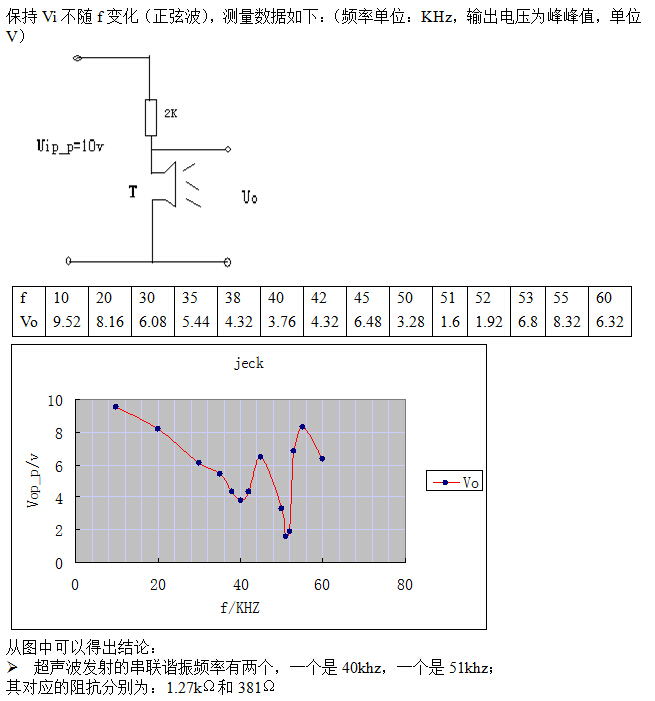

Author: xiahouzuoxin / Date: 2014-10-18
转载请注明出处：http://xiahouzuoxin.github.io
我们知道正常人耳能听到的声音频率范围是20Hz~20KHz，超声就是声音频率在20KHz以上的声信号，避开人耳能听到的声音信号，这样超声就具有强的抗干扰能力。
最简便的方法就是使用网络分析仪，两端口一对上，直接给出|Z|~f的变化曲线图。但网络分析仪太贵了，除非大公司否则一般用不起，另一种方法就是自己搭电路，用正弦波信号发生器测量。下面是搭电路的测量方法（这部分方法和测试数据来自网络文章《超声波测距模块》）。
Ultrasound
实验最后给出了两个不同频率下的匹配阻抗值。非线性电路中也满足欧姆定律，只不过电阻被阻抗代替了，“欧姆定律真是一项伟大的发现”，
超声的发送距离与超声探头发射的能量P=U^2/|Z|有关，远距离超声测距当然希望的是：相同电压下，超声探头的阻抗越小越好。
由于40KHz和51KHz是阻抗匹配谐振的两个低峰值点，对应阻抗的极小值点，这也是为什么市面上的超声一般都用40KHz（40KHz谐振点处变化相对于51KHz平缓，当驱动频率存在小的偏差时对输出的影响要比50KHz小）。从上面的曲线可以看出，如果电路允许，使用51KHz进行超声测距距离会更远（阻抗比40KHz更低）。
由于超声发射头生产的原因，谐振频率不一定精确的是40KHz和51KHz，难免会存在误差，最好的方法是使用矢量网络分析仪直接测|Z|f曲线，使用|Z|f测出的谐振频率。我购买的收发一体超声探头的谐振频率点时51.48KHz。
通过设计电路测试发现，在51KHz附近，超声接收到的信号非常弱，反而40KHz附近接收到的信号很强。上面的分析结论——如果电路允许，使用51KHz进行超声测距距离会更远——存在问题。做如下修正：
因为51KHz只考虑的是发射端的增益，而整体的信号接收情况是Gain(总)=Gain(发射)*Gain(接收)，当发射增益在51KHz时很大，而51KHz时接收端的增益却很小，最后造成了Gain(总)很小。通过发射（使用信号发生器手动调节频率来测试）接收联合测试，最后还是在40KHz（就买到的超声探头具体一点是39.5KHz）时Gain(总)达到最大。